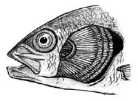

|
|

A fish is a fish...right? Not quite. Lampreys and eels are fish; as are sharks, skates and rays. The sea horse also fits into the classification of a fish, though to look at one you might think otherwise. Some fish can survive "out of water" and some have actual lobed fins like the limbs of other animals.
Scientists place the types of fish in the world into three categories or groups:
- the jawless fish (Class Agnatha);
- those that have a skeleton made of cartilage, a firm, flexible
connective tissue made of protein (the cartilaginous fish or Class
Chondrichthyes) ;
- and those that have a skeleton made of bone (the bony fish
or Class Osteichthyes).
|
The groups differ in their means of reproduction. In bony fish and jawless fish, the majority
of females discharge their eggs into the water for fertilization
by milt (semen) from the males. In most cartilaginous fish, as
in mammals, the eggs are fertilized within the bodies of the females.
Since cartilaginous fish (sharks, skates and rays) are typically
marine, they are not found in the present day lakes of Saskatchewan.
The Chestnut Lamprey, a jawless fish, can be found in some locations
in the province.
Bony Fish (Osteichthyes)
Scientists classify all organisms into groups using a set of parameters.
Bony fish belong to the Kingdom Animalia, Phylum Chordata and
Class Osteichthyes. Further classification places fish with more
similar characteristics together into orders, families, genera
and, species.
Bony fish are characterized by the presence of a skeleton made
of bone (as opposed to one made of cartilage like sharks, rays
and skates). Bony fish can be further subdivided into two groups
based on the construction of their fins. Ray-finned fish encompass
the majority of bony fish living in Saskatchewan waters. As the
name states, the fins of these fish are constructed of skinny
rays and flesh. These rays are easily seen on the fins of pike,
sauger or any other popular angling fish. Lobed-fin fish are present elsewhere in the world, but do not have any representatives in Saskatchewan. As the name suggests, these fish have fins comprised of bones similar to bones that make up limbs (like in a whale, or seal.) Some of these fish also have the capability to breathe air, having developed "lungs".
|